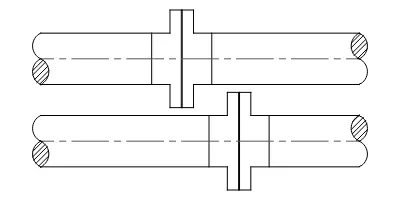
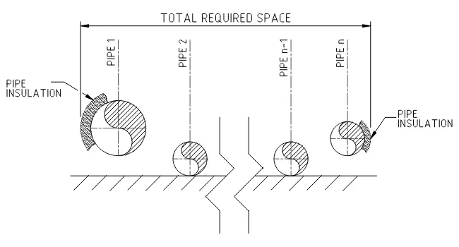
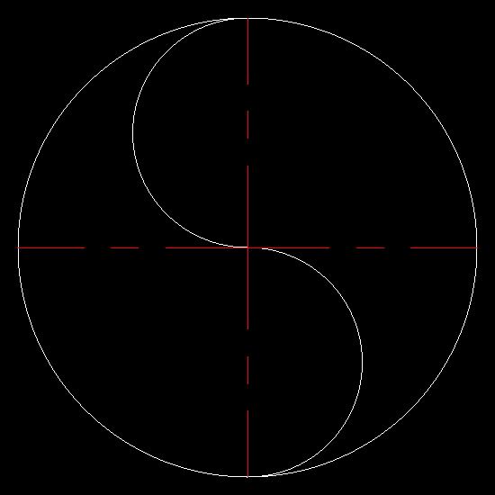
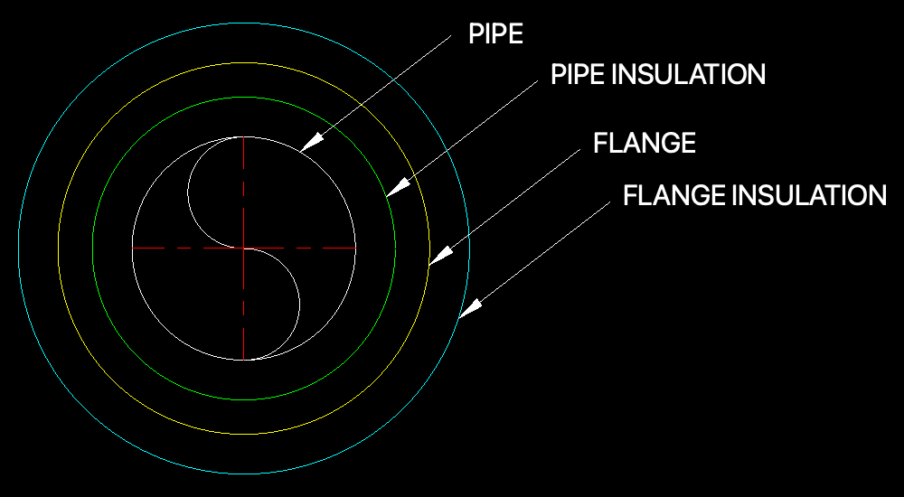
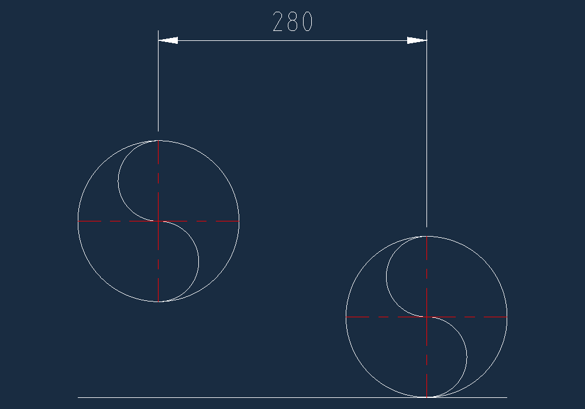
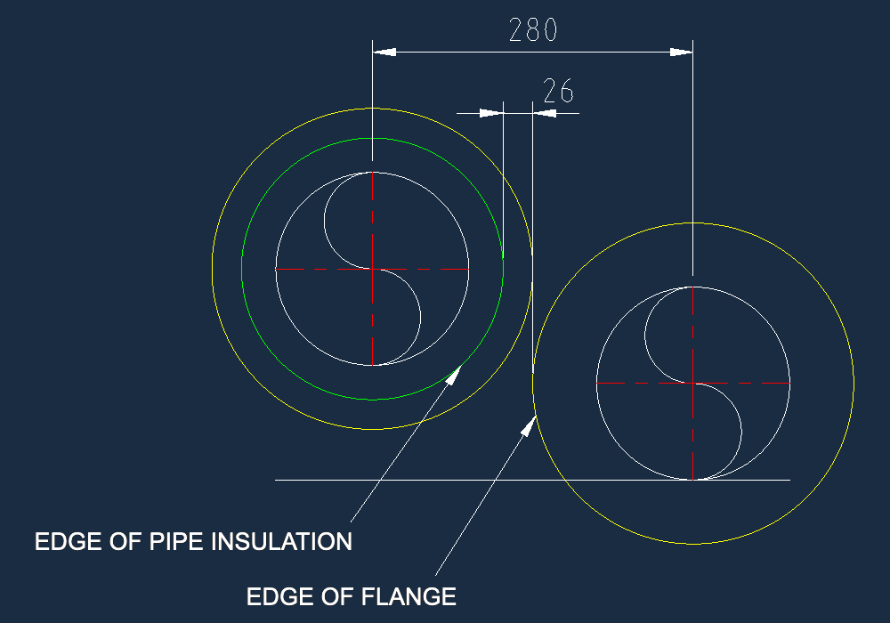

Advanced Pipe Spacing Calculator
for Piping Engineers
Calculation Method
The calculator determines the minimum Center-to-Center (C2C) distance in mm between each pair of adjacent pipelines. It assumes a staggered flange arrangement — flanges on adjacent lines are longitudinally offset, so the governing case is always pipe body on one side against a flange on the other.

For each pipeline pair, two cases are evaluated and the larger result governs. Results are rounded up to the nearest 5 mm.
Pipe and flange OD data is sourced from industry-standard dimensional tables for carbon and stainless steel piping. For background on the engineering problem this tool addresses and its intended use, see the About page.
User Interface
Global Settings
- Gap (mm): The minimum required physical clearance between the widest points of adjacent components (insulation or flange).
- Calculation Logic:
-
Pipe-to-Flange: Factors in flange diameter and insulation thickness when calculating spacing.

-
Pipe-to-Pipe: Flanges are omitted; calculates spacing based strictly on pipe OD and insulation thickness.

-
Pipe-to-Flange: Factors in flange diameter and insulation thickness when calculating spacing.
Pipeline Parameters
- Pipeline Name: Optional label used in DXF drawings and PDF reports.
- NPS: Select the nominal pipe size to automatically assign the correct Pipe OD from the database.
- Class: Select the pressure rating to automatically assign the flange OD from the database. Classes Axxx refer to Series A flanges, while Bxxx refer to Series B flanges.
- Insul (mm): Insulation thickness on the pipe body, in millimeters.
- Flg Insul (mm): Insulation thickness on the flange, in millimeters.
- BOP (mm): Used in DXF drawings and PDF reports. By default, pipelines are drawn at BOP +0. If a non-zero value is entered, the BOP will be shifted by the specified amount relative to the rest of the pipelines.
Functions
- Export DXF: Exports a DXF (version R12, metric, mm) side view drawing. Each entity is on its own layer.
- Export PDF: Exports a report in PDF format, showing the current pipeline setup and respective results.
- Save Setup: Saves your current pipeline arrangement locally as a
.jsonfile. - Load Setup: Loads a saved pipeline arrangement from a
.jsonfile. - + Add Pipe: Inserts a new pipeline below the selected pipeline.
- Remove: Deletes the selected pipeline from the current arrangement.
Total Required Space
The Total Required Space is calculated by adding the radii and insulation thicknesses of the first and last pipes to the sum of all center-to-center distances within the current piping arrangement. The figure below illustrates this logic.

DXF Drawing
Layer Structure
The exported DXF assigns each geometry type to its own named layer. Default visibility settings are:
- CENTERLINE (visibility set to ON)
- FLANGE (visibility set to OFF)
- FLANGE_INSULATION (visibility set to OFF)
- PIPE (visibility set to ON)
- PIPE_INSULATION (visibility set to OFF)
- TEXT (visibility set to ON)
Layer Visibility and Verification
With default layers on, the drawing shows a clean section view of the arrangement (Fig. 1). Turning on the hidden layers reveals the full flange and insulation profiles (Fig. 2), which can be used to verify that the specified gap is maintained between adjacent components (Fig. 3 & 4).




NOTICE: Enabling the hidden helper layers will often result in a visual overlap of flange profiles on adjacent pipelines. This is expected — the staggered flange setup means those flanges are on different planes along the Z-axis and do not actually clash.
Abbreviations
- NPS: Nominal Pipe Size
- OD: Outside Diameter
- Insul: Insulation thickness
- Flg: Flange
- BOP: Bottom of Pipe
- Rad: Radius
- C2C: Center to Center distance, in mm